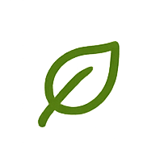

О проекте
«Случайный рецепт из того, что есть» — это помощник на кухне, который помогает находить вкусные рецепты из тех продуктов, которые уже есть у вас дома.
Мы стремимся сделать процесс приготовления проще, удобнее и разнообразнее.
Цель проекта
Помочь пользователям находить рецепты из имеющихся ингредиентов, сокращая пищевые отходы и экономя время на планирование блюд.
Задачи проекта
- Разработать удобный интерфейс для поиска рецептов по доступным ингредиентам.
- Создать базу рецептов и ингредиентов.
- Реализовать фильтры и сортировку для удобного поиска.
- Сделать сервис доступным и простым в использовании.
</>
Используемые технологии
- HTML5 — структура страниц
- CSS3 — стилизация и дизайн
- JavaScript — интерактивность и логика работы
Ожидаемый результат
Пользователь получает простой и удобный сервис, который помогает находить рецепты из того, что есть дома, вдохновляет на новые блюда и способствует рациональному использованию продуктов.

Польза проекта
◷
Экономия
времени
♲
Сокращение
пищевых отходов
♨
Разнообразие
рациона
☺
Удобство
использования